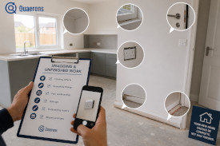
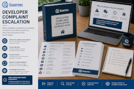

If your home has snagging issues, unfinished works, poor workmanship, leaks, damp, cracking or a developer who keeps delaying, your evidence may need a clearer escalation pack.
Quick eligibility check
Snagging issues
Review finishing defects, incomplete details and unresolved snagging lists.
Poor workmanship
Organise evidence around leaks, damp, cracks, installation faults and quality concerns.
Unfinished works
Check promised work, handover records and repair commitments against what happened.
Structured escalation
Clear paperwork support for complaints to developers, warranty providers or complaint routes.
Common problem
New build disputes often involve repeated promises, partial repairs, missed appointments, unclear warranty responses and defects that appear soon after moving in.
Quaerens helps organise photographs, snagging lists, handover documents, warranty information and developer correspondence into a clearer escalation pack. We are not a law firm and do not provide legal advice.
You may want escalation support if:

A new home should not be left with unresolved finishing defects, incomplete fittings or repeated missed repair promises.
Leaks, damp, cracks, poor installation, drainage problems and insulation concerns may need a more structured evidence review.

When repeated complaints go nowhere, a timeline and evidence pack can make the unresolved issues much clearer.
Simple process
Share the defect history, move-in date, repair attempts, warranty position and developer responses.
We help structure photographs, snagging lists, emails, reports, warranty documents and repair records.
We help prepare factual, structured wording for you to send to the developer, warranty provider or relevant route.
Interactive review tool
Answer a few quick questions to get a broad indication of whether your new build issue may be suitable for structured escalation support.
Estimated Escalation Suitability
Potentially suitable
This is only a broad guide. Actual suitability depends on the documents, photographs, warranty position, complaint history, developer responses, timescales and whether the issue is appropriate for paperwork-based escalation.
Start Defect ReviewCommon new build issues
If defects, unfinished works or poor workmanship were reported but never properly resolved, a clearer timeline and evidence pack may help move the complaint forward.
Submit Your InformationWhy choose Quaerens
We help organise photos, snagging lists, handover records, repair history and developer responses into a clearer complaint pack.
We help prepare factual, professional correspondence for you to send to the developer, warranty provider or appropriate route.
We explain what the issue appears to be, what documents matter, and whether paperwork-based escalation looks realistic.
Frequently asked questions
“Our snagging list had turned into months of scattered emails. Once the evidence was organised, the unresolved items were much easier to explain.”
— New build snagging escalation example
“The developer kept saying repairs were complete, but the photos and timeline showed the same issues kept returning.”
— Developer complaint example
“What helped most was setting out the defects calmly and factually instead of sending another frustrated email.”
— New build defect review example
These are illustrative examples. Outcomes depend on the facts, documentation, developer, warranty position, complaint route and timescales.
Take the next step
Send us a short summary of the new build issue, when it was reported, what evidence you have and how the developer or warranty provider has responded so far.
Submit Your InformationQuaerens is not a law firm. We provide structured escalation support and drafting assistance for new build complaints. We do not guarantee outcomes.